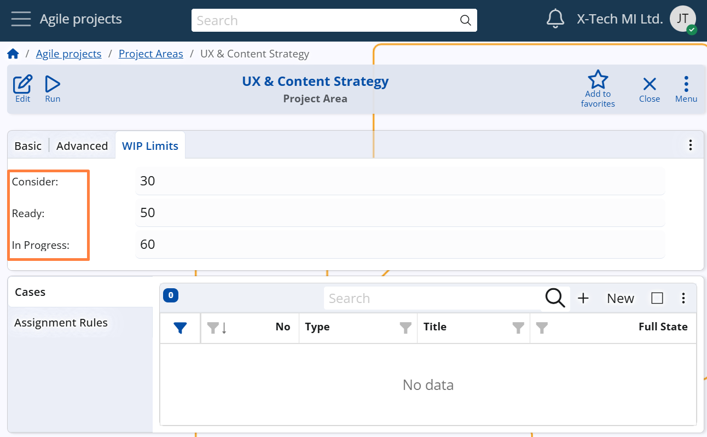

Project Areas
A Project Area in Agile PM represents a distinct structural unit within a Project, typically focused on a specific part of the overall work.
It is used to divide a Project into smaller, more manageable components that can be handled independently, either by different teams or based on specialized responsibilities.
Each Project can consist of one or more Project Areas, depending on its complexity and structure.
For example: A project of type Client Implementation may include Project Areas such as Data Migration, System Configuration, and User Training, each handled by specialized teams.
Note
While each Project Area typically belongs to a specific Project, it is also possible to define shared Project Areas that span across all Projects.
To do this, leave the Project field empty.
Configuration path: Project Area definition → Advanced panel → Project field
Display panel name: Advanced
System panel name: Project Area

Responsibility and collaboration settings
Each Project Area may have a designated Owner — the person responsible for overseeing and coordinating the work within that Area.
A Social Group can also be assigned to the Project Area — just like in Projects — to represent the team or department involved in discussions and decisions related to that area.
This helps ensure accountability, collaboration, and clear ownership over specific sections of the project.
Configuration path:
Project Area definition → Basic panel → Owner field
Display panel name:Basic
System panel name:Project Area
Display field name:Owner
System field name:Primary UserProject Area definition → Advanced panel → Social Group field
Display panel name:Advanced
System panel name:Project Area
WIP (work-in-progress) Limits
Like Projects, Project Areas may also use WIP Limits to control the number of Cases that are allowed to remain in specific workflow states within that Area.
These limits are applied per Project Area, and they function independently from the WIP limits defined at the Project level.
This mechanism ensures that each Area of the project stays manageable and avoids bottlenecks.
A separate WIP limit can be defined for each of the following System States:
CONSIDER, READY, IN PROGRESS
If a limit is exceeded, the system will block transitions to the respective state until the number of Cases in that state within the same Project Area in the Case’s Project falls below the defined limit.
Configuration path: Project Area Definition → WIP Limits panel → Consider, Ready, and In Progress fields
Display panel name: WIP Limits
System panel name: Project
Display field name: Consider, Ready, and In Progress fields
System field name: Consider WIP Limit, Ready WIP Limit, and In Progress WIP Limit fields
